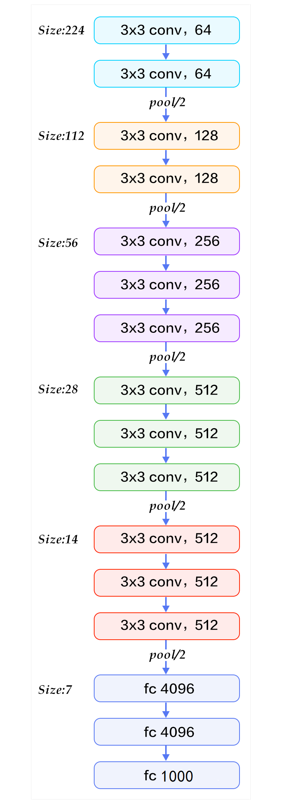
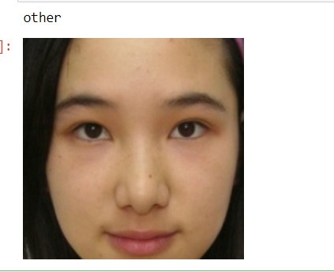
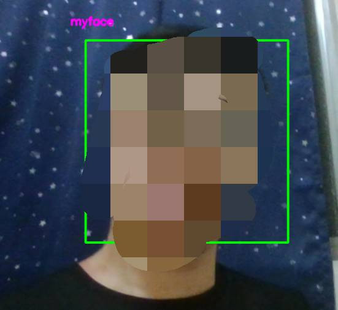

【day13】預訓練模型訓練 & 應用- 使用OpenCV製作人臉辨識點名系統 (下)
發布日期: 2022-09-17 00:02:06
原文連結: https://ithelp.ithome.com.tw/articles/10291607
還記得我們在使用LSTM或是CNN時都需要創建Data與Label並花費一些時間訓練我們的神經網路嗎?我相信在訓練神經網路時是會花費相當多的時間的，我們在訓練的這些資料可能只有5萬筆訓練完的時間大約1分鐘左右就可以完成。但如果我們所訓練的資料是幾百萬或幾千萬呢?那就算是3090ti訓練一個月都還跑不完，若我們很需要這一些的訓練的結果呢?那就只能去找看看有沒有人有相似的模型來修改，所以這時就有遷移學習(Transfer Learning)這種方式來幫助我們。
遷移式學習(Transfer Learning)
首先我們知道，在訓練神經網路後，網路會學習到許多特徵資料與權重，以CNN神經網路為例，在捲積層與池化層會做特徵強化與擷取特徵的動作，最後通過全連接層計算結果。而在遷移式學習中就是將擷取特徵(進入全連接層前的資料)提取出來，並且通過我們任務的需求，去微調這些特徵的權重也就是用前一個模型的特徵，來找到我們想要的結果。
預訓練模型
知道的遷移式學習的概念，是不是知道預訓練模型的名稱由來了?因為我們這個模型就被訓練過了，我們只需將這模型的特徵運用在我們的某層神經網路之內，或是對原始模型進行微調就能的到一個很好的結果。目前的預訓練模型分為兩種方式，分別是基於特徵(feature-based)與微調(fine-tuen)的方法。
基於特徵(feature-based):這一種做法是使用一個經過大數據訓練過的模型結果(通常是特徵值)，套入到模型的其中一層，並且通過自己的資料集，不斷的調整與學習資料。舉個例子在我們【day9】 讓電腦了解文字資料 & 使用Pytorch做IMDB影評分析中，使用到的神經網路embedding，在第9天我們是通過LSTM的文字前後關係，去更新embedding中的數值變化，若使用基於特徵的預訓練模型像是ELMO、Word2Vec，就能夠直接在embedding層當中導入這些已經被訓練好的特徵，這樣的效果就會比從0開始好非常的多。
微調(fine-tuen):這種方法會保留原始模型，讓我們新增資料去調整這個原始模型各階層之間的權重，之後通過一個額外的接口(fine-tunr中主要是訓練這個接口)，來實現各種不同的下游任務，使一個模型來完成多種不同的結果，例如:BERT可以做問答機器人，也可以做分類器，也就是因為這種特性，下游任務的寫法也成為了另一個議題。
1.實作辨識人臉
今天的目錄如下:
- 1.VGG-16介紹
- 2.下載資料與資料前處理
- 3.創建資料集
- 4.使用VGG-16模型並訓練
- 5.VGG-16完整程式碼
VGG-16簡介
在開始寫程式之前我們需要了解一下VGG-16內部構造。VGG-16最重要的概念就是使用大量的3x3捲積核來實現大捲積核的資料，例如:假設輸入為8、步長為1的CNN神經網路，5x5的捲積核最終輸出會是4(輸入-捲積核大小 + 1)，而3x3的捲積核，使用兩次輸出結果也會是4(第一次8-3+1=6 第二次6-3+1=4)，這代表一個5x5的捲積核可以通過2個3x3的捲積核來表達，這種做法的好處，就是在3x3中的捲積核保留了更多圖像的特徵值。

來源:http://deanhan.com/2018/07/26/vgg16/
可以看到在VGG16的架構圖中其實就是一個CNN的神經網路，但通過大量的數據與拆解捲積核的方式卻能大幅提升準確率
下載資料與資料前處理
了解到VGG16的構造後，就可以開始使用Pytorch實作了，首先為了辨識這個人到底是誰，我們還需要一筆資料，也就是別人的人臉資料，來區分我們需要點名的對象，我們可以先到kaggle下載這些人臉的資料點我下載。
之後我們創建以下的資料夾與檔案，並且開啟jupyter notebook來開始今天的實作
code
└─data(放資料的資料夾)
| ├─myface(放自己臉部的資料夾)
| └─other(放剛剛下載的圖片的資料夾)
└─VGG-16.ipynb(jupyter notebook的檔案)
import今天會用到的函式庫
import torch
import torch.nn as nn
import torch.optim as opt
import torch.nn.functional as F
import torchvision as tv
from torch.autograd import Variable
from torch.utils.data import Dataset, DataLoader,random_split
show = tv.transforms.ToPILImage()
接下來使用transforms.Compose()來創建要對圖片的操作，在這邊最重要的事情是我們需要將圖片縮放到224x224，因為這是VGG-16的輸入格式
transform = tv.transforms.Compose([
#轉成tensor格式
tv.transforms.ToTensor(),
#將短邊等比放大成224
tv.transforms.Resize(224),
#裁切多於的部分
tv.transforms.CenterCrop(224),
#正規化
tv.transforms.Normalize(mean=[0.5, 0.5, 0.5], std=[0.5, 0.5, 0.5])])
這樣就能完成資料前處理了
創建資料集
還記得前幾天最麻煩的事情嗎?就是使用class的方式建立dataset，在pytorch當中建立"圖片"的dataset其實很容易搞定，只需要將圖片放入到不同資料夾當中，就可以用tv.datasets.ImageFolder()一次性的將資料變成dataset，還能指定參數，去完成前處理的工作，這樣子做是不是能夠省下許多時間呢。
data = tv.datasets.ImageFolder('../data/',transform = transform)
train_num = int(len(data)*0.7)
test_num =len(data)-train_num
train_set, test_set = torch.utils.data.random_split(data, [train_num,test_num])
batch_size = 4
train_loader = DataLoader(train_set, batch_size = batch_size,shuffle = True, num_workers = 0)
test_loader = DataLoader(test_set, batch_size = batch_size, shuffle = True, num_workers = 0)
我們的資料變成dataset後會依照資料夾名稱排列來當作label，像是我們我們的兩個資料夾myface與other可以知道按照英文排序m比o還要早出現，所以myface的label就會為0，other就會是1，我們可以觀察一下的資料是否如同我們所想並且顯示照片。
#label轉換成名稱
classes = {0:'myface', 1:'other'}
#返回處理過後的圖片與label
img, label = data[2000]
顯示名稱
print(classes[label])
#還原正規化結果並顯示
show(img*0.5+0.5)

使用VGG-16模型並訓練
pytorch中可以通過tv.models.vgg16函式，下載VGG-16的預訓練模型，之後只需要設定好優化器與損失函數就能開始訓練了。
model = tv.models.vgg16(pretrained=True).cuda()
criterion = nn.CrossEntropyLoss().cuda()
optimizer = opt.Adam(model.parameters(), lr=0.0001)
當我們不知道模型的架構時，可以使用print()來查看模型的疊法與詳細參數
print(model)
----------------顯示----------
VGG(
(features): Sequential(
(0): Conv2d(3, 64, kernel_size=(3, 3), stride=(1, 1), padding=(1, 1))
(1): ReLU(inplace=True)
(2): Conv2d(64, 64, kernel_size=(3, 3), stride=(1, 1), padding=(1, 1))
(3): ReLU(inplace=True)
(4): MaxPool2d(kernel_size=2, stride=2, padding=0, dilation=1, ceil_mode=False)
(5): Conv2d(64, 128, kernel_size=(3, 3), stride=(1, 1), padding=(1, 1))
(6): ReLU(inplace=True)
(7): Conv2d(128, 128, kernel_size=(3, 3), stride=(1, 1), padding=(1, 1))
(8): ReLU(inplace=True)
(9): MaxPool2d(kernel_size=2, stride=2, padding=0, dilation=1, ceil_mode=False)
(10): Conv2d(128, 256, kernel_size=(3, 3), stride=(1, 1), padding=(1, 1))
(11): ReLU(inplace=True)
(12): Conv2d(256, 256, kernel_size=(3, 3), stride=(1, 1), padding=(1, 1))
(13): ReLU(inplace=True)
(14): Conv2d(256, 256, kernel_size=(3, 3), stride=(1, 1), padding=(1, 1))
(15): ReLU(inplace=True)
(16): MaxPool2d(kernel_size=2, stride=2, padding=0, dilation=1, ceil_mode=False)
(17): Conv2d(256, 512, kernel_size=(3, 3), stride=(1, 1), padding=(1, 1))
(18): ReLU(inplace=True)
(19): Conv2d(512, 512, kernel_size=(3, 3), stride=(1, 1), padding=(1, 1))
(20): ReLU(inplace=True)
(21): Conv2d(512, 512, kernel_size=(3, 3), stride=(1, 1), padding=(1, 1))
(22): ReLU(inplace=True)
(23): MaxPool2d(kernel_size=2, stride=2, padding=0, dilation=1, ceil_mode=False)
(24): Conv2d(512, 512, kernel_size=(3, 3), stride=(1, 1), padding=(1, 1))
(25): ReLU(inplace=True)
(26): Conv2d(512, 512, kernel_size=(3, 3), stride=(1, 1), padding=(1, 1))
(27): ReLU(inplace=True)
(28): Conv2d(512, 512, kernel_size=(3, 3), stride=(1, 1), padding=(1, 1))
(29): ReLU(inplace=True)
(30): MaxPool2d(kernel_size=2, stride=2, padding=0, dilation=1, ceil_mode=False))
(avgpool): AdaptiveAvgPool2d(output_size=(7, 7))
(classifier): Sequential(
(0): Linear(in_features=25088, out_features=4096, bias=True)
(1): ReLU(inplace=True)
(2): Dropout(p=0.5, inplace=False)
(3): Linear(in_features=4096, out_features=4096, bias=True)
(4): ReLU(inplace=True)
(5): Dropout(p=0.5, inplace=False)
(6): Linear(in_features=4096, out_features=1000, bias=True))
最後訓練的部分基本上不會改變，所以我們直接把前幾天的程式抄過來，就能夠正常訓練了
epochs = 10
for epoch in range(epochs):
train_loss = 0
train_acc = 0
train = tqdm(train_loader)
model.train()
for cnt,(data,label) in enumerate(train, 1):
data,label = data.cuda() ,label.cuda()
outputs = model(data)
loss = criterion(outputs, label)
_,predict_label = torch.max(outputs, 1)
optimizer.zero_grad()
loss.backward()
optimizer.step()
train_loss += loss.item()
train_acc += (predict_label==label).sum()
train.set_description(f'train Epoch {epoch}')
train.set_postfix({'loss':float(train_loss)/cnt,'acc': float(train_acc)/(cnt*batch_size)*100})
model.eval()
test = tqdm(test_loader)
test_acc = 0
for cnt,(data,label) in enumerate(test, 1):
data,label = data.cuda() ,label.cuda()
outputs = model(data)
_,predict_label = torch.max(outputs, 1)
test_acc += (predict_label==label).sum()
test.set_description(f'test Epoch {epoch}')
test.set_postfix({'acc': float(test_acc)/cnt})
可以看到結果第一次訓練準確率就高達了96.8%，這是一個非常好的效果。
train Epoch 0: 100%|███████████████████████████████████████████| 264/264 [01:54<00:00, 2.30it/s, loss=0.527, acc=92.8]
test Epoch 0: 100%|████████████████████████████████████████████████████████| 113/113 [00:16<00:00, 6.92it/s, acc=96.8]
訓練好了就能將我們數據集的權重保存下來之後連結上opencv了
torch.save(model.state_dict(), 'model_weights.pth')
訓練完整程式碼
import torch
import torch.nn as nn
import torch.optim as opt
import torch.nn.functional as F
import torchvision as tv
from torch.autograd import Variable
from torch.utils.data import Dataset, DataLoader,random_split
from tqdm import tqdm
show = tv.transforms.ToPILImage()
transform = tv.transforms.Compose([tv.transforms.ToTensor(),
tv.transforms.Resize(224),
tv.transforms.CenterCrop(224),
tv.transforms.Normalize(mean=[0.5, 0.5, 0.5], std=[0.5, 0.5, 0.5])
])
data = tv.datasets.ImageFolder('data/',transform = transform)
train_num = int(len(data)*0.7)
test_num =len(data)-train_num
train_set, test_set = torch.utils.data.random_split(data, [train_num,test_num])
batch_size = 16
train_loader = DataLoader(train_set, batch_size = batch_size,shuffle = True, num_workers = 0)
test_loader = DataLoader(test_set, batch_size = batch_size, shuffle = True, num_workers = 0)
model = tv.models.vgg16(pretrained=True).cuda()
criterion = nn.CrossEntropyLoss().cuda()
optimizer = opt.Adam(model.parameters())
epochs = 1
for epoch in range(epochs):
train_loss = 0
train_acc = 0
train = tqdm(train_loader)
model.train()
for cnt,(data,label) in enumerate(train, 1):
data,label = data.cuda() ,label.cuda()
outputs = model(data)
loss = criterion(outputs, label)
_,predict_label = torch.max(outputs, 1)
optimizer.zero_grad()
loss.backward()
optimizer.step()
train_loss += loss.item()
train_acc += (predict_label==label).sum()
train.set_description(f'train Epoch {epoch}')
train.set_postfix({'loss':float(train_loss)/cnt,'acc': float(train_acc)/(cnt*batch_size)*100})
model.eval()
test = tqdm(test_loader)
test_acc = 0
for cnt,(data,label) in enumerate(test, 1):
data,label = data.cuda() ,label.cuda()
outputs = model(data)
_,predict_label = torch.max(outputs, 1)
test_acc += (predict_label==label).sum()
test.set_description(f'test Epoch {epoch}')
test.set_postfix({'acc': float(test_acc)/(cnt*batch_size)*100})
torch.save(model.state_dict(), 'model_weights.pth')
是不是覺得少了很多pytorch的程式碼，因為我這次使用了快速創立資料的方式與預訓練模型，減少了建立dataset與創建model的步驟。接下來我們把model放入到opencv中吧。
2.人臉辨識點名系統
我們使用了opencv來找到我們影像中的臉部，也使用了VGG-16預訓練模型來增加預測人臉的效果，那是時候將這兩個技術結合在一起了。
- 1.建立初始環境
- 2.將模型加入鏡頭並顯示結果
- 3.VGG-16完整程式碼
建立初始環境
我們一樣先從導入函式庫開始
import torchvision as tv
import pandas as pd
import torch
import datetime
import cv2
接下來把把模型、權重、點名表、臉部辨識器...等資料先載入進系統。
#需要辨識的人名(按照名稱排列)
name = ['myface','other']
#導入VGG-16模型
model = tv.models.vgg16(pretrained=True).eval()
#讀取訓練好的權重
model.load_state_dict(torch.load('model_weights.pth'))
#利用年月日創建資料
excel_path = 'attend/' + datetime.datetime.now().strftime('%Y-%m-%d') + '.csv'
try:
df = pd.read_csv(excel_path, index_col="ID")
except:
df = pd.DataFrame([[i,'未簽到'] for i in name],columns=['ID', '簽到日期'])
df.to_csv(excel_path, encoding='utf_8_sig', index=False)
df = pd.read_csv(excel_path, index_col="ID")
#圖像正規化操作
transform = tv.transforms.Compose([
tv.transforms.ToTensor(),
tv.transforms.Resize(224),
tv.transforms.CenterCrop(224),
tv.transforms.Normalize(mean=[0.5, 0.5, 0.5], std=[0.5, 0.5, 0.5])])
臉部辨識器
classfier = cv2.CascadeClassifier(cv2.data.haarcascades +"haarcascade_frontalface_alt2.xml")
將模型加入鏡頭並顯示結果
在訓練時怎麼處理圖片，實際使用就需要用相同的方式，但因為圖片的維度是(3,224,224)，訓練時卻是使用(圖片數量,3,224,224)，所以需要再加入一個維度在第0維來解決這個問題。
face = transform(face)
#新增維度並預測
result = model(face.unsqueeze(0))
之後需要判斷這個人是否簽到完畢，如果有就不用再重新刷新時間了。最後我們在把使用者的ID放在畫面上
faceID = name[int(faceID[0])]
if df.loc[faceID]['簽到日期']=='未簽到':
df.loc[faceID]['簽到日期'] = datetime.datetime.now().strftime('%Y-%m-%d %H:%M:%S')
df.to_csv(excel_path,encoding='utf_8_sig')
cv2.putText(frame,faceID ,(x - 30, y - 30),cv2.FONT_HERSHEY_SIMPLEX,0.5,(255,0,255),2)
一套人臉辨識點名系統，通常會將攝影機放置在一個固定的地方，並且需全天運轉，所以人臉辨識點名系統需要一個可以依照年月日不斷的創建excel的判斷式。
system_time = datetime.datetime.now().strftime('%H:%M:%S')
if system_time =='00:00:00':
excel_path = 'attend/' + datetime.datetime.now().strftime('%Y-%m-%d') + '.csv'
df = pd.DataFrame([[i,'未簽到'] for i in name],columns=['ID', '簽到日期'])
df.to_csv(excel_path, encoding='utf_8_sig', index=False)
df = pd.read_csv(excel_path)
最後我們把昨天的程式與今天的部分組合起來就能以下的效果

VGG-16版本完整程式碼
import torchvision as tv
import pandas as pd
import torch
import datetime
import cv2
name = ['myface','other']
model = tv.models.vgg16(pretrained=True).eval()
model.load_state_dict(torch.load('model_weights.pth'))
excel_path = 'attend/' + datetime.datetime.now().strftime('%Y-%m-%d') + '.csv'
transform = tv.transforms.Compose([
tv.transforms.ToTensor(),
tv.transforms.Resize(224),
tv.transforms.CenterCrop(224),
tv.transforms.Normalize(mean=[0.5, 0.5, 0.5], std=[0.5, 0.5, 0.5])])
try:
df = pd.read_csv(excel_path, index_col="ID")
except:
df = pd.DataFrame([[i,'未簽到'] for i in name],columns=['ID', '簽到日期'])
df.to_csv(excel_path, encoding='utf_8_sig', index=False)
df = pd.read_csv(excel_path, index_col="ID")
classfier = cv2.CascadeClassifier(cv2.data.haarcascades +"haarcascade_frontalface_alt2.xml")
cap = cv2.VideoCapture(0)
while(not cap.isOpened()):
cap = cv2.VideoCapture(0)
cnt = 0
classfier = cv2.CascadeClassifier(cv2.data.haarcascades +"haarcascade_frontalface_alt2.xml")
while(True):
ret, frame = cap.read()
gray = cv2.cvtColor(frame, cv2.COLOR_BGR2GRAY)
faceRects = classfier.detectMultiScale(gray, scaleFactor = 1.2, minNeighbors = 3, minSize = (32, 32))
if len(faceRects) > 0:
for (x, y, w, h) in faceRects:
cv2.rectangle(frame, (x - 10, y - 10), (x + w + 10, y + h + 10), (0,255,0), 2)
face = frame[y - 10: y + h + 10, x - 10: x + w + 10]
face = transform(face)
result = model(face.unsqueeze(0))
_,faceID = torch.max(result,1)
faceID = name[int(faceID[0])]
cv2.putText(frame,faceID ,(x - 30, y - 30),cv2.FONT_HERSHEY_SIMPLEX,0.5,(255,0,255),2)
if df.loc[faceID]['簽到日期']=='未簽到':
df.loc[faceID]['簽到日期'] = datetime.datetime.now().strftime('%Y-%m-%d %H:%M:%S')
df.to_csv(excel_path,encoding='utf_8_sig')
if cv2.waitKey(1) == ord('q'):
break
system_time = datetime.datetime.now().strftime('%H:%M:%S')
if system_time =='00:00:00':
excel_path = 'attend/' + datetime.datetime.now().strftime('%Y-%m-%d') + '.csv'
df = pd.DataFrame([[i,'未簽到'] for i in name],columns=['ID', '簽到日期'])
df.to_csv(excel_path, encoding='utf_8_sig', index=False)
df = pd.read_csv(excel_path, index_col="ID")
cv2.imshow('live', frame)
cap.release()
cv2.destroyAllWindows()
後話:更好的辨識方法Googl FaceNet
我們在使用VGG16的時候，新增或移除資料時都必須重新fine-tune模型，若有人離職或入職就須重新訓練程式，這樣子是很麻煩的事情，所以這時候就有方法叫做Triplet Loss，這一種loss function是將圖片的特徵映射到歐式距離中，選取特徵最不相像的圖片與最像的圖片同時進行特徵訓練來改進模型，這能夠使我們只需使用一張照片來創建臉部資料庫，不過我就不多講解這技術的應用了，有興趣的可以到我的git專案中看到Google的人臉辨識寫法點我
課程中的程式碼都能從我的github專案中看到
https://github.com/AUSTIN2526/learn-AI-in-30-days